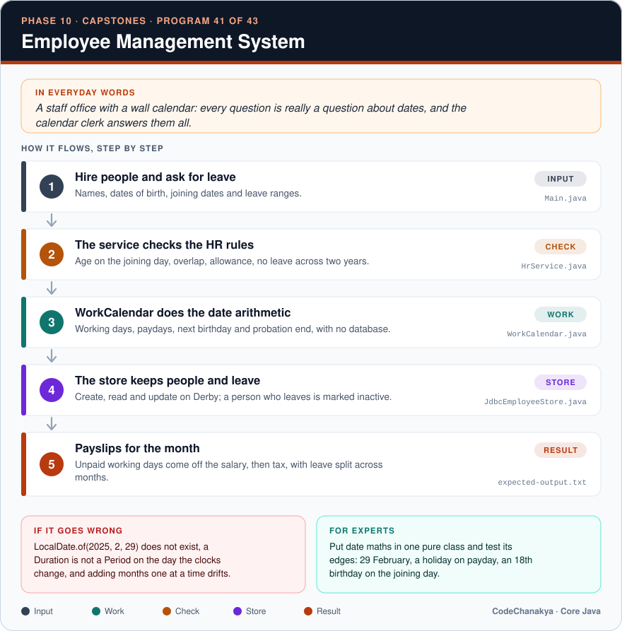

Phase 10 · Capstones · Program 41 of 43
Employee Management System
The problem
HR questions sound simple and are full of corner cases. A week with a public holiday has four leave days, not five. Someone born on 29 February has a birthday every year. Payday is the last working day of the month, so it moves back from a weekend.
All the date arithmetic sits in one pure class, WorkCalendar, with no database and no clock, so most of the tests are about dates. The rest is create, read and update on Derby, a soft delete for people who leave, and payslips with unpaid leave split across months.
See the flow
The whole program as one picture. Read it top to bottom; the colour of each card says what kind of step it is.


If you are new to coding
A staff office with a wall calendar: every question is really a question about dates, and the calendar clerk answers them all.
If you are learning
Follow the numbered cards from top to bottom. Open the file named on each card, run the program, and match its output to the last card.
If you are experienced
Put date maths in one pure class and test its edges: 29 February, a holiday on payday, an 18th birthday on the joining day.
Text version of the flow
- Hire people and ask for leave (input): Names, dates of birth, joining dates and leave ranges.
- The service checks the HR rules (check): Age on the joining day, overlap, allowance, no leave across two years.
- WorkCalendar does the date arithmetic (work): Working days, paydays, next birthday and probation end, with no database.
- The store keeps people and leave (store): Create, read and update on Derby; a person who leaves is marked inactive.
- Payslips for the month (result): Unpaid working days come off the salary, then tax, with leave split across months.
Read in this order
- 1WorkCalendar.javaWorking days, paydays, birthdays and probation. Study this one.
- 2HrService.javaHiring rules, leave rules and payslips.
- 3JdbcEmployeeStore.javaDates travel as java.sql.Date and return as LocalDate.
- 4WorkCalendarTest.javaThe date edges, with no database.
- 5HrServiceTest.javaNested groups of rules.
- 6Main.javaFour hires, nine leave requests, July payslips.
The code
package com.codechanakya.hr; import java.time.DayOfWeek; import java.time.LocalDate; import java.time.Month; import java.time.MonthDay; import java.time.YearMonth; import java.util.Set; import java.util.TreeSet; /** * Which days count as working days: Monday to Friday, except the listed public holidays. * All the date arithmetic of the HR system lives here, so it can be tested without any database. */ public final class WorkCalendar { private final Set<LocalDate> holidays; public WorkCalendar(Set<LocalDate> holidays) { this.holidays = new TreeSet<>(holidays); } public boolean isWorkingDay(LocalDate date) { DayOfWeek day = date.getDayOfWeek(); return day != DayOfWeek.SATURDAY && day != DayOfWeek.SUNDAY && !holidays.contains(date); } /** Working days from {@code from} to {@code to}, both included. Zero when {@code to} is before {@code from}. */ public int workingDaysBetween(LocalDate from, LocalDate to) { if (to.isBefore(from)) { return 0; } return (int) from.datesUntil(to.plusDays(1)).filter(this::isWorkingDay).count(); } public int workingDaysIn(YearMonth month) { return workingDaysBetween(month.atDay(1), month.atEndOfMonth()); } /** The last working day of the month: payday. */ public LocalDate lastWorkingDay(YearMonth month) { LocalDate day = month.atEndOfMonth(); while (!isWorkingDay(day)) { day = day.minusDays(1); } return day; } /** The given date, or the next working day if it is a weekend or holiday. */ public LocalDate onOrAfter(LocalDate date) { LocalDate day = date; while (!isWorkingDay(day)) { day = day.plusDays(1); } return day; } /** * The next birthday on or after {@code today}. A 29 February birthday is celebrated on 28 February in * years that have no 29 February. */ public static LocalDate nextBirthday(LocalDate birthDate, LocalDate today) { MonthDay birthday = MonthDay.from(birthDate); LocalDate thisYear = birthday.atYear(today.getYear()); return thisYear.isBefore(today) ? birthday.atYear(today.getYear() + 1) : thisYear; } /** The last day of the probation period: six months after joining, moved to the next working day. */ public LocalDate probationEnds(LocalDate joinDate) { return onOrAfter(joinDate.plusMonths(6)); } public static boolean isLeapDay(LocalDate date) { return date.getMonth() == Month.FEBRUARY && date.getDayOfMonth() == 29; } }
package com.codechanakya.hr; import static org.junit.jupiter.api.Assertions.assertEquals; import static org.junit.jupiter.api.Assertions.assertFalse; import static org.junit.jupiter.api.Assertions.assertTrue; import java.time.LocalDate; import java.time.YearMonth; import java.util.Set; import org.junit.jupiter.api.DisplayName; import org.junit.jupiter.api.Test; import org.junit.jupiter.params.ParameterizedTest; import org.junit.jupiter.params.provider.CsvSource; /** All the date arithmetic, with no database. */ class WorkCalendarTest { private final WorkCalendar calendar = new WorkCalendar(Set.of(LocalDate.of(2025, 8, 15), LocalDate.of(2025, 12, 25))); @Test @DisplayName("weekends and listed holidays are not working days") void workingDays() { assertTrue(calendar.isWorkingDay(LocalDate.of(2025, 6, 30))); assertFalse(calendar.isWorkingDay(LocalDate.of(2025, 7, 5))); assertFalse(calendar.isWorkingDay(LocalDate.of(2025, 7, 6))); assertFalse(calendar.isWorkingDay(LocalDate.of(2025, 8, 15))); } @ParameterizedTest(name = "{0} to {1} has {2} working days") @CsvSource({ "2025-08-11, 2025-08-15, 4", "2025-08-11, 2025-08-11, 1", "2025-07-05, 2025-07-06, 0", "2025-07-04, 2025-07-07, 2", "2025-07-07, 2025-07-04, 0"}) void workingDaysBetween(String from, String to, int expected) { assertEquals(expected, calendar.workingDaysBetween(LocalDate.parse(from), LocalDate.parse(to))); } @ParameterizedTest(name = "{0} has {1} working days") @CsvSource({"2025-07, 23", "2025-08, 20", "2025-02, 20", "2025-12, 22"}) void workingDaysInMonth(String month, int expected) { assertEquals(expected, calendar.workingDaysIn(YearMonth.parse(month))); } @ParameterizedTest(name = "payday for {0} is {1}") @CsvSource({"2025-06, 2025-06-30", "2025-08, 2025-08-29", "2025-11, 2025-11-28", "2025-12, 2025-12-31"}) void lastWorkingDay(String month, String expected) { assertEquals(LocalDate.parse(expected), calendar.lastWorkingDay(YearMonth.parse(month))); } @Test @DisplayName("when the last day is a holiday too, payday moves back past it") void paydayBackPastHoliday() { WorkCalendar c = new WorkCalendar(Set.of(LocalDate.of(2025, 9, 30))); assertEquals(LocalDate.of(2025, 9, 29), c.lastWorkingDay(YearMonth.of(2025, 9))); } @ParameterizedTest(name = "born {0}, today {1}: next birthday {2}") @CsvSource({ "1992-07-04, 2025-06-30, 2025-07-04", "1992-07-04, 2025-07-04, 2025-07-04", "1992-07-04, 2025-07-05, 2026-07-04", "1988-02-29, 2025-06-30, 2026-02-28", "1988-02-29, 2027-12-31, 2028-02-29", "1999-12-31, 2025-12-31, 2025-12-31"}) void nextBirthday(String born, String today, String expected) { assertEquals(LocalDate.parse(expected), WorkCalendar.nextBirthday(LocalDate.parse(born), LocalDate.parse(today))); } @ParameterizedTest(name = "joined {0}: probation ends {1}") @CsvSource({ "2025-03-03, 2025-09-03", "2020-02-29, 2020-08-31", "2024-08-31, 2025-02-28", "2025-06-30, 2025-12-30"}) void probationEnds(String joined, String expected) { assertEquals(LocalDate.parse(expected), calendar.probationEnds(LocalDate.parse(joined))); } @Test void probationMovesPastAHoliday() { // 15 August 2025 is a Friday and a holiday; joining on 15 February gives 15 August, so it moves to Monday the 18th. assertEquals(LocalDate.of(2025, 8, 18), calendar.probationEnds(LocalDate.of(2025, 2, 15))); } @Test void leapDay() { assertTrue(WorkCalendar.isLeapDay(LocalDate.of(2024, 2, 29))); assertFalse(WorkCalendar.isLeapDay(LocalDate.of(2024, 2, 28))); } }
Only the key files are shown. The rest are in the repository.
Run it
$ ./run.sh --check
== Hiring
Hired Asha Rao as employee 1
Hired Bilal Khan as employee 2
Hired Chitra Nair as employee 3
Hired Dev Mehta as employee 4
Hiring Eva Joseph refused: The email address 'eva-at-example.com' is not valid.
Hiring Farid Ali refused: An employee must be at least 18 on the joining date, but would be 15.
Hiring Gita Rao refused: The joining date 2025-07-15 is in the future.
Hiring Asha Again refused: An employee with the email asha@example.com already exists
== Dates
Asha Rao joined 2020-02-29 tenure 5y 4m 1d probation ends 2020-08-31 (MONDAY)
Bilal Khan joined 2023-11-15 tenure 1y 7m 15d probation ends 2024-05-15 (WEDNESDAY)
Chitra Nair joined 2025-03-03 tenure 0y 3m 27d probation ends 2025-09-03 (WEDNESDAY)
Dev Mehta joined 2025-06-30 tenure 0y 0m 0d probation ends 2025-12-30 (TUESDAY)
Birthdays in the next 30 days: [Asha Rao (2025-07-04), Dev Mehta (2025-07-10), Chitra Nair (2025-07-20)]
Bilal was born on 29 February; his next birthday is celebrated on 2026-02-28
Payday for 2025-06: 2025-06-30 (MONDAY)
Payday for 2025-08: 2025-08-29 (FRIDAY)
Payday for 2025-12: 2025-12-31 (WEDNESDAY)
== Leave
Asha annual 11 to 15 Aug (15 Aug is a holiday): request 1, 4 working days
Asha annual 13 to 14 Aug: refused, That overlaps leave request 1 (2025-08-11 to 2025-08-15).
Asha annual all of September: refused, Only 14 ANNUAL days left in 2025, but 22 requested.
Asha annual Saturday and Sunday: refused, That range has no working days.
Bilal sick from 20 June (past): refused, Leave cannot start in the past (2025-06-20).
Bilal annual 5 July back to 1 July: refused, The leave ends (2025-07-01) before it starts (2025-07-05).
Bilal annual 30 Dec to 2 Jan: refused, Leave cannot run across two years. Please make two requests.
Chitra unpaid 14 to 18 July: request 2, 5 working days
Dev annual 21 to 22 July: request 3, 2 working days
Asha annual days left in 2025 (before approval): 14
Approve leave 1: done
Approve leave 1 again: refused, Leave request 1 is already APPROVED.
Approve leave 2: done
== Changes
Raise Bilal to 52000: done
Set Bilal's salary to -1: refused, The salary must be positive.
Move Chitra to ENGINEERING: done
Terminate Dev: done
Terminate Dev again: refused, Dev Mehta no longer works here.
Raise Dev after leaving: refused, Dev Mehta no longer works here.
Dev's leave after leaving: [REJECTED]
Active in ENGINEERING: [Asha Rao, Chitra Nair]
Active in HR: []
== Payslips for July 2025 (23 working days)
Asha Rao gross 85000.00 unpaid days 0 deduction 0.00 tax 8500.00 net 76500.00
Bilal Khan gross 52000.00 unpaid days 0 deduction 0.00 tax 5200.00 net 46800.00
Chitra Nair gross 38000.00 unpaid days 5 deduction 8260.87 tax 1486.96 net 28252.17
Dev Mehta gross 52000.00 unpaid days 0 deduction 0.00 tax 5200.00 net 46800.00
OK: output matches expected-output.txt
This is the real output from OpenJDK 21.0.13 on Linux, with the real Apache Derby 10.16.1.1 jars. The run is the same every time because the clock is fixed and the database lives in memory. The project's GitHub Actions run is the check on Java 21 and 25 with real Maven and the real JUnit jar. It has not yet been run on Windows or macOS. Run ./run.sh --test for the JUnit tests.
Try it yourself
- BeginnerAdd probation reminders for the next 30 days.
- IntermediateAdd work anniversaries for a month.
- IntermediateAllow half-day leave.
- IntermediateMake the weekend days a setting.
- ChallengeGive each employee a time zone and decide what "today" means.
- ChallengeCarry up to five annual days into the next year.
Hints and solutions are in the exercises and solutions folders. Try first.
Break it on purpose
Three files: a date that does not exist, Duration against Period on the day the clocks change, and adding months one at a time. The README in the broken folder explains each one.